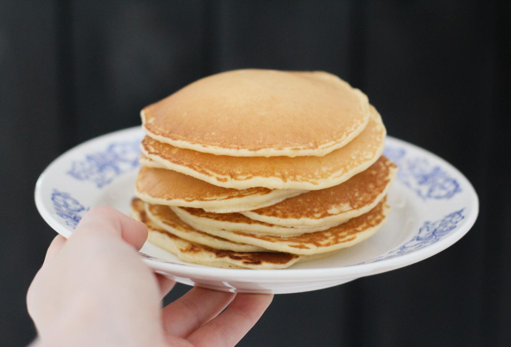

Home
Protein Pancakes

Description
These protein-packed pancakes are light, fluffy, and seriously tasty—plus super easy to make and actually filling.
Each 3-pancake serving delivers 25g of protein, nearly double what you get from most frozen options (around 13g for smaller portions).
Ingredients
- 1 ½ cup all-purpose flour
- ½ cup vanilla whey protein powder
- 2 ½ teaspoons baking powder
- Pinch of salt
- 1 ½ cups milk, any
- 2 large eggs
- 2 tablespoons melted butter
- 1 teaspoon vanilla, optional
Steps
- In a large bowl, combine the flour, protein powder, baking powder, and salt.
- Make a well in the middle and pour the milk, eggs, butter, and vanilla (if using). Break up the eggs with a fork first, then incorporate them into the other liquid ingredients (you could do this in a separate bowl, but why dirty another thing). Mix the batter, working the dry ingredients from the outside-of-the-bowl-in, until there are no visible lumps.
- Heat a large non-stick pan (or griddle) over medium-high heat. Once hot, grease the surface with butter, oil, or spray. Immediately, pour ¼ cup of pancake batter onto the greased pan. Use the back of the spoon to spread it out, it's a thick batter.
- Cook the pancakes for about 2 minutes, until the edges begin to look defined and bubbles form. Flip the pancakes over and cook for another two minutes. Avoid pressing down with a spatula. Remove the pancakes from the pan onto a plate.
- Repeat the process with the remaining pancake batter.
- Serve them immediately or keep them warm. Then, stack them up, and top them with your favorite toppings and syrup.